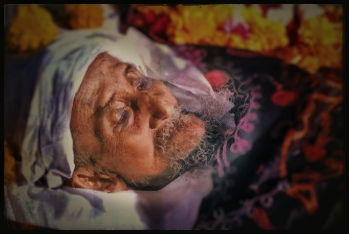
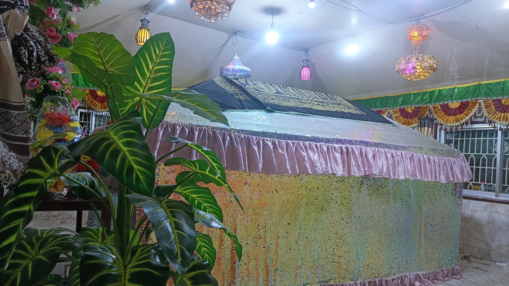
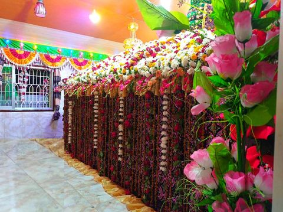

গ্যালারি

বাবাজান কেবলা

রওজামুবারক

শাহ্জাদাগণ
টেমপ্লেট

অলিকুল সম্রাট, সুলতানুল আরেফীন,
খাতেমুল আউলিয়া, মুজাদ্দিদে আখেরুজ্জামান, মুছলিহ আজম,
গাউছে মুখতার হজরতুল আল্লামা
শাহ আব্দুল মালেক আল-কুতুবী মুহিউদ্দিন আজমী (রাহঃ)
এখানে দরবারের পরিবারের সদস্যদের সম্পর্কে বিস্তারিত তথ্য থাকবে।
যোগাযোগের বিস্তারিত তথ্য এখানে দেওয়া হবে।
রওজা মোবারক ও পাঞ্জেগানা কমপ্লেক্স
দারুল হিকমাহ আল মালেকীয়া দাখিল মাদ্রাসা
বায়তুর রহমান আল-কুতুবী জামে মসজিদ
শাহ মালেকীয়া শামসুন নুর হেফজখানা ও এতিমখানা
রিয়াজুল জান্নাত ফোরকানিয়া মাদ্রাসা
কুতুবদিয়া টেকনিক্যাল এন্ড বি এম কলেজ
মুসাফিরখানা (মেহমানখানা)
কবরস্থান
প্রচার ও প্রকাশনা বিভাগ
দরিদ্র কল্যান তহবিল (যাকাত ফান্ড)
যুগে যুগে পৃথিবীর ত্রাণকর্তা হিসেবে যে সকল ক্ষণজন্মা মহাপুরুষ জন্মেছেন, তম্মধ্যে হজরতুল আল্লামা শাহ্ আবদুল মালেক মুহিউদ্দীন আজমী আল-কুতুবী রা. অন্যতম। বহুমাত্রিক জ্ঞান ও প্রতিভাগুণে তাঁর যশ-খ্যাতি ও সুনাম ছড়িয়ে পড়ে পৃথিবীর আনাছে-কানাচে। দ্বীনের পুনর্জাগরণকারী ও অবিসংবাদিত আধ্যাত্মিক ধর্মীয় নেতা হিসেবে তাঁর রয়েছে আকাশচুম্বী জনপ্রিয়তা। আত্মিক শুদ্ধ পুরুষ হিসেবে কুতুবদিয়ার মালেক শাহ্ এক জীবন্ত কিংবদন্তীর নাম। দেশবরেণ্য এই আধ্যাত্মিক পুরুষের প্রকৃত নাম হজরতুল আল্লামা শাহ্ মালেক মুহিউদ্দীন আজমী আল কুতুবী রহ.। তিনি ১৯১১ সালের জুলাই মাসে কক্সবাজার জেলার পূর্ণভূমি কুতুবদিয়া দ্বীপের এক সম্ভান্ত মুসলিম পরিবারে জন্মগ্রহণ করেন। তাঁর মাতার নাম মরহুমা বদিউজ্জামান এবং তাঁর পিতার নাম হাফেজ শামসুদ্দীন রহ.। ছোটবেলা থেকেই তিনি ছিলেন খুব গাম্ভীর্য ও পরহেজগার। সাত বছর বয়স থেকেই তিনি পাঞ্জেগানা ও তাহাজ্জুদ নামায শুরু করেন। গ্রামেই প্রাথমিক শিক্ষা সমাপ্ত করেন। আলিম ও ফাজিল পরীক্ষা কৃতিত্বের সাথে উত্তীর্ণ হন চট্টগ্রাম নগরীর দারুল উলুম আলিয়া মাদ্রাসা থেকে। অতঃপর উচ্চ শিক্ষার্থে ভারতের দারুল উলুম দেওবন্দ মাদ্রাসায় ভর্তি হন। শিক্ষার প্রতিটি স্তরেই তিনি অসাধারণ কৃতিত্বের অধিকারী ছিলেন। জ্ঞানের জগতে তাঁর বিচরণ ছিলো অতুলনীয়। হজরত কেবলার জ্ঞানের গভীরতা এতোই সূক্ষ্ম ও প্রখর ছিলো যে, যে কোনো পুস্তকের কোন পৃষ্ঠায় কী আছে, তা হুবহু বলে দিতে পারতেন! এই ইবারত অত্যন্ত দুর্লভ ও অদৃষ্টপূর্ব। তার ভাষাগত দক্ষতা ছিলো ছন্দময় ও সাবলীল। শব্দচয়ন, শব্দগঠন, বাক্য পঠন ও শব্দশৈলী ছিলো অত্যন্ত মার্জিত। তাঁর প্রতিটি কথা ছিলো কোরআন ও হাদিসের রেফারেন্সযুক্ত। জ্ঞানের এমন কোনো শাখা-প্রশাখা নেই, যেখানে তাঁর অবাধ বিচরণ ও দক্ষতা ছিলো না। ইলমে তফসির, ইলমে হাদিস, ইলমে ফিকাহ্, ইলমে উসুল, ইলমে নাহু , ইলমে সরফ, ইলমে বালাগাত, ইলমে ফাসাহাত, ইলমে মানতেক, ইলমে ফারায়েজ, ইলমে শরিয়ত, ইলমে তরিকত, ইলমে হাকিকত, ইলমে মারেফাত ও ইলমে তাসাউফ ইত্যাদি বিষয়ে তাঁর দক্ষতা ছিলো অতুলনীয়। তিনি ছিলেন ইমামুল উলুম ওয়াল ফুনুন। শাহ্ আবদুল মালেক মুহিউদ্দীন আজমী আল কুতুবী রহ. দারুল উলুম আলীয়া মাদ্রাসায় অধ্যায়নকালে তাঁর দাদাপীর হযরত আলহাজ্ব মাওলানা হাফেজ হামেদ হাছান আলভী র. এর নির্দেশক্রমে কাদেরীয়া সিলসিলার পীর হযরত হাফেজ মুনির উদ্দীন নুরুল্লাহ্ রহ. এর হাতে বায়ত গ্রহণ করেন। পরবর্তীতে খেলাফত প্রাপ্ত হন। অতঃপর ফানা ফিশ শায়খ, ফানা ফির রাসুল দ., ফানা ফিল্লাহ, বাকা বিল্লাহ এই স্তরগুলো অতিক্রম করে স্থায়ীভাবেই মহান আল্লাহর সান্নিধ্যে চলে যান। ১৯৪৯ সালে দিদারে ইলাহি ও দিদারে মুস্তফা দ. লাভ করার চরম ও চূড়ান্ত ও দুরূহ পথ অতিক্রমে নিমগ্ন হন। অর্ধাহারে এমনকি অনাহারে বনে জঙ্গলে, পাহাড়পর্বতে, নদী-সমুদ্রে একাকী নির্জনে গভীর ধ্যানমগ্ন হয়ে কঠিন সাধনা বা রেয়াজতের পর্যায় অতিবাহিত করেন।হজরত কেবলা রহ. পাপাচারে নিমজ্জিন ও কুসংস্কারে আচ্ছন্ন উম্মতে মুহাম্মদিকে অন্ধকারের ঘোর অমানিশা থেকে সত্য ও আলোর পথে ফিরিয়ে আনা তথা পরিচালিত করার জন্য আত্মনিবেশ করেন। চট্টগ্রাম নগরীর আন্দরকিল্লা কুরবান আলী সওদাগরের বিল্ডিং ও মাঝিরঘাট শফিক আহমদ সওদাগরের বাড়ীতে আত্মশুদ্ধিমূলক কর্মসূচি গ্রহণ করে ভক্তদের শরিয়ত ও তরিকত চর্চায় পরিচালিত করেন। পরর্বতীতে ১৯৬০ সালে কক্সবাজারের কুতুবদিয়া দ্বীপে নিজ বাড়িতে কুতুব শরীফ দরবার প্রতিষ্ঠা করেন। দরবারের পাঞ্জেগানা নামাজে নিজেই ইমামতি করতেন। নামায শেষে ভক্তদের নিয়ে জিকির, মুরাকাবা ও মোশাহাদা করতেন। জিকিররত অবস্থায় মনুষ্য কলব পরিবর্তন হয়ে বেহুশ হয়ে পড়তেন। এ অবস্থায় লাভ করতেন দিদারে ইলাহি ও দিদারে মুস্তাফা দ.। দ্বীন প্রচারে তিনি বহুবার বাতিলপন্থীদের অত্যাচার-অনাচার, জুলম ও নির্যাতনের শিকার হয়েছিলেন। বাতিলপন্থীদের রক্তচক্ষু উপেক্ষা করে আন্দোলন ও সংগ্রামের মধ্যে স্বগৌরবে সত্য কে প্রতিষ্ঠিত করেছেন। তাঁর কাছে অসংখ্য ভক্ত নানান সমস্যা নিয়ে গভীর সমুদ্রের উত্তাল ঢেউ উপেক্ষা করে ছুটে আসতেন। তাঁর নূরানী চেহারা দেখার সাথে সাথেই হাজারো জন বুকচাপা কষ্টের কথা ভুলে গিয়ে অন্তরে অনাবিল প্রশান্তির ছোঁয়া অনুভব করতেন। তাঁর হৃদয়গ্রাহী সুমধুয়ী কোরআন তেলওয়াত,বক্তৃতা ও আরশ কাঁপানো জিকির মানুষের কলবের অবস্থা পরিবর্তন করে অন্য এক সুষমায় শান্তিতে পরিপ্লাবিত করে দিতো। সম্পূর্ণ জীবন আর্ত মানবতার সেবায় নিজেকে উৎসর্গ করেছেন তিনি। আত্মীয় স্বজন, পাড়া প্রতিবেশী প্রত্যেকের হক আদায় করেছেন তিনি। দুস্থ, অসহায়, অভাবী ও ঋণগ্রস্ত মানুষকে দান করেছেন অকাতরে। কন্যাদায়গ্রস্থ অসহায় পিতার পাশে দাঁড়িয়ে মেয়ের বিবাহের ব্যবস্থা করেছেন। বাড়িঘর মেরামত, শিক্ষা প্রতিষ্ঠানে অনুদান সহ বিভিন্ন সামাজিক উন্নয়নে সক্রিয় ভূমিকা রেখেছেন। তাঁর জীবনের মর্মবাণী ছিলো মানুষ মানুষের জন্য। বস্তুত ইসলাম সাম্যের ধর্ম। ইসলামে ধনী-গরিব কোনো ভেদাভেদ নেই। এজন্য তাঁর দৃষ্টিতে রাজা-বাদশাহ্, ফকির-মিসকিন, ধনী-গরিব ও আত্মীয়-অনাত্মীয় সকলেই সমান। একজন রাষ্ট্রপতি, প্রধানমন্ত্রী, মন্ত্রী ও এমপি কে তিনি সেভাবে সমাদর ও মূল্যায়ন করতেন, একজন গরীব ভদ্রলোককে ও অনুরূপ সম্মান করতেন। মেহমানদারি ছিল তাঁর খুব পছন্দ। তবে বে-নামাজির জন্য তাঁর হুশিয়ারী বাক্য ছিল “কুতুব শরীফ দরবার আমার দরবার নয়, এটা আল্লাহর দরবার। এ দরবারে বে-নামাজিদের ভাত হারাম।” ধনী-গরীব প্রত্যেকেই মেহমানদারি করতেন এক কাতারে বসিয়ে। দরবারে মেহমানদের থাকা ও খাওয়ার সুব্যবসস্থা করেছেন বিনামূল্যে বা বিনা হাদিয়ায় যা আজ অবধি চালু রয়েছে। এছাড়া প্রকৃত আলেম-ওলামাদের বেশ সম্মান করতেন। তাদের হাদিয়াও দিতেন। ওলামায়ে কেরামদের ব্যাপারে তার উদ্ধৃতি ছিলো, “ইজ্জতে ওলামা”। তিনি বলতেন আলেমদের ইজ্জত না করলে আল্লাহর দরবারে লজ্জিত হতে হবে।” হজরত কেবলার এর কাছে বিভিন্নজন হাদিয়া নিয়ে আসতেন। অবৈধ টাকা পয়সা ও ধনসম্পদ গ্রহণ করতেন না। কে কি জন্য তাঁর কাছে আসতেন; আল্লাহর নূর দিয়ে তাঁর প্রসারিত অন্তদৃষ্টি বা অন্তচক্ষু ; তা দেখতে পারতেন। হাদিয়ার সিংহভাগ অংশ গরীব ও অভাবী মানুষের তরে প্রদান করতেন। অল্পাংশ টাকা দরবার পরিচালনার কাছে ব্যয় করতেন। ধর্মীয় গোঁড়ামি, ধর্মান্ধ ও কট্টরপন্থীদের অপছন্দ করতেন তিনি। সব মতাদর্শী তাঁর সান্নিধ্যে আসতেন। অনর্থক, অহেতুক ও বেফাঁস কোনো কথা বলতেন না তিনি। সর্বদা বলতেন, “আমি আল্লাহর হুকুম বা আদেশ ছাড়া কোনো কথা এবং কাজ করি না। আমাকে আল্লাহর তাআলা শেষ জামানার গুনাগার উম্মতে মুহাম্মদির পাহারদার বা জিম্মাদার হিসেবে নবুয়াতের খাদেম ও বেলায়েতের দায়িত্ব দিয়ে পৃথিবীতে প্রেরণ করেছেন।” তিনি আরো বলতেন, “আমি নবী করিম দ.এর গাট্টি বহনকারী এবং একটি মুহূর্ত ও আমার ফুরসত নেই। আমি সার্বক্ষণিক আল্লাহর ও তাঁর প্রিয় রাসুল দ.এর অর্পিত দায়িত্ব পালনে ব্যস্ত। আমি রাসুল দ. এর কদম ব-কদম অর্থাৎ পরিপূর্ণ সুন্নাতে নববীর অনুস্মরণ ও অনুকরণকারী। ” এই মহান ও পবিত্র দায়িত্ব পালনকালে, খাবার গ্রহনের ও সুযোগ হতো না তাঁর। তাঁর কাছে খাবার আনলে বলতেন, “আমার খাবার গ্রহণের ও সময় নেই, আমি আল্লাহর কাজে ব্যস্ত। দ্বীন ও মিল্লাতের মূল সমস্যা যেখানে আমি সেখানেই কাজ করছি; যারা মূল সমস্যা উপলব্ধি করতে পারবে; তারাই আমাকে চিনতে পারবে।” তাঁর মানস দর্শন ছিলো, ভোগেই নয়, ত্যাগেই মুক্তি। আল্লাহর হুকুম পালনই ছিলো তাঁর সুখের আধার ও ঠিকানা। এ ছাড়া প্রচন্ড শীতের কনকনে ঠান্ডা বাতাস আর ঘর কুয়াশার শৈত্যপ্রবাহের সময় খালি গায়ে (সতর ঢেকে) খালি ধ্যানমগ্ন হয়ে উর্ধ্ব জগতে হারিয়ে যেতেন তিনি। অথচ ওই পরিস্থিতে জনজীবন থাকে বস্তুত বিপর্যস্ত, বয়োবৃদ্ধারা ঢলে পড়ে মৃত্যুর মুখে। অন্যদিকে গ্রীষ্মের গরমে যেখানে মানুষের জীবন অসহনীয় হয়ে ওঠে, প্রাণীকুল অসহ্য গরম থেকে বাঁচতে পুকুরের নীচের শীতল পানিতে গা ভাসিয়ে থাকে। সেখানে তিনি গরম পানি দিয়ে গোসল করতেন! রাতে তাঁর চর্তুপাশে ৫০ ওয়াটের দশাধিক হ্যাজাক বাতি (চট্টগ্রামের ভাষায় মেন্টল লাইট) জ্বালিয়ে বসে থাকতেন। এ এক কঠিন রেয়াজত! প্রতিনিয়তই আত্মতৃপ্তি বা আত্মসন্তষ্টির বিপরীত কাজ করতেন। এই জন্য হাদিসে নফসের সাথে যুদ্ধ করাকে জিহাদে আকবর বলা হয়েছে। তিনি ছিলেন সত্যের মূর্ত প্রতীক। তাগুত শক্তির বিরুদ্ধে বজ্রকন্ঠ স্বর, দ্বীনের নিবেদিত সৈনিক, নায়ের রাসুল স., আলেমে রাব্বানি, দ্বীনের পুনর্জাগরণকরী এক অ্যনন্য ব্যক্তিত্ব। ইসলামের ক্রান্তিলগ্নে ১৯৭৬ থেকে ৮৫ সাল অবধি তিনি সিরাতুন্নবী দ. মাহফিল চালু করেছিলেন। হজরত কেবলা রহ. এর চেহারাতে নূরের রশ্মি ছিলো প্রখর। তাঁর চেহারার দিকে তাকালেই অন্তরে খোদাভীতি ও নবী প্রেম সৃষ্টি বা হতো। রাসুল দ. বলেছেন, যাদের দেখলেই আল্লাহর কথা স্মরণ হয়, তারাই আল্লাহর অলি (ইবনে মাজাহ, ইবনে কাসির)। আহলে সুন্নাত ওয়াল জামায়াতের বিশুদ্ধ আকীদা হচ্ছে, কারামাতুল আউলিয়া হাক্কুন। তাঁর জীবন ছিল অসংখ্য কারামতে সমৃদ্ধ। এমন কোন মুহূর্ত ছিল না তাঁর থেকে কারামাত সাবিত বা প্রকাশিত হয়নি। তাঁর কাছে গণপ্রজাতন্ত্রী বাংলাদেশ সরকারের রাষ্ট্রপতি, প্রধানমন্ত্রী, মন্ত্রী পরিষদ, সংসদ সদস্য, সরকারি বেসরকারি রাষ্ট্রীয় গুরুত্বপূর্ণ ব্যক্তিবর্গ, পীর-মাশায়েখ, আলেম সমাজ ও বিদেশী নাগরিক নানান সমস্যা নিয়ে তাঁর স্মরণাপন্ন হতেন। উল্লেখ্য যে ১৯৫০ দশকে জাতির পিতা বঙ্গবন্ধু শেখ মুজিবুর রহমান তাঁর সহচর জহুর আহম্মদ চৌধুরী কে নিয়ে হজরত কেবলার স্বাক্ষাতে যান। বঙ্গবন্ধু রুমে প্রবেশের প্রাক্কালে তিনি বলেছিলেন, “বাংলাদেশের ভবিষ্যতের রাজা আসতেছেন।” সাক্ষাতের পর হজরত কেবলা বঙ্গবন্ধুকে দোয়া করেছিলেন। এ ছাড়া তাঁর পবিত্র দরবারে গিয়েছিলেন রাষ্ট্রপতি জিয়াউর রহমান ও হুসেইন মুহাম্মদ এরশাদ। তিনি প্রেসিডেন্ট জিয়াউর রহমান কে সমাজ ও রাষ্ট্রবিরোধী কাজ না করার জন্য প্রতিশ্রুতিবদ্ধ করেছিলেন। রাষ্ট্রপতি এরশাদ বলেছিলেন, হজরত আপনার কী চাওয়া-পাওয়া আছে? হজরত কেবলা বলেছিলেন, “আমার ইচ্ছা আল্লাহ পূরণ করবেন।” তোমার কী প্রয়োজন বল? এরশাদ জীবনের নিরাপত্তা চেয়েছিলেন। বাবাজান প্রত্যুত্তরে বলেছিলেন, “ আল্লাহর পক্ষ হতে তোমার জীবন রক্ষিত হবে। দেখা গেলো ২০১৯ সালে তাঁর মৃত্যু হয়েছিলো স্বাভাবিকভাবেই। অসাধ্য সাধনে, মরণব্যাধি নিরাময়ে , কলুষিত অন্তর পরিশোধনে, সমস্যা সমাধানে ও কলহ নিরসনে তাঁর দোয়া মুহূর্তে মধ্যেই আল্লাহ কবুল করতেন। পবিত্র মুখে যা বলতেন পরক্ষণই তা বাস্তবায়িত হত। কারণ হাদিসে এসেছে, “অলিদের জবান, আমার জবান।” উল্লেখ্য যে, ১৯৯১ সালে বাংলাদেশ ওপর দিয়ে বয়ে গিয়েছিলো প্রচন্ড ঘূর্ণিঝড় ও জলোচ্ছাস। উপকূলীয় অঞ্চল ও দ্বীপসমূহ লন্ডভন্ড করে দিয়েছিলো। কিন্ত কী আশ্চর্য, কুতুবদিয়া একটি কুটির ছিলো অক্ষত! তাহলো হজরত কেবলার হুজরা মোবারক। বিশিষ্ট জনের মধ্যে আরো যারা হজরত কেবলার সান্নিধ্যে গিয়েছিলেন , প্রধানমন্ত্রী মিজানুর রহমান চৌধুরী, পররাষ্ট্র মন্ত্রী আবদুস সামাদ আজাদ, ডেপুটি স্পিকার ব্যারিস্টার সুলতান আহমদ চৌধুরী, যোগাযোগ মন্ত্রী কর্নেল অব. অলি আহমদ, এক দফার প্রবক্তা এম.এ আজিজ, জিয়উদ্দিন আহমদ বাবলু, এস.এম ইউছুফ, মেয়র এবিএম মহিউদ্দীন চৌধুরী, সাবেক সেনা প্রধান নুরুদ্দীন খাঁন ও মাহমুদুল ইসলাম চৌধুরী প্রমুখ। হজরত কেবলা বাংলাদেশের অর্থনৈতিক উন্নয়ন প্রসঙ্গে ভবিষ্যৎ বাণী করেছিলেন, “কুতুবদিয়া দ্বীপের চতুর্দিকে বড় বড় (মাদার ভেসেল) জাহাজ নোঙর করবে। বাংলাদেশ বিশ্বের ব্যবসা-বাণিজ্য নিয়ন্ত্রন করবে। কুতুবদিয়া দ্বীপের চারিদিকে লাল-নীল রঙ্গের বাতি জ্বলবে। পায়ে হেটে কুতুবদিয়া চ্যানেল পার হওয়া যাবে। কুতুবদিয়া দ্বীপ গ্যাস, তেল ও স্বর্ণের উপর ভাসছে। সময় মত সন্ধান পাওয়া যাবে। বাংলাদেশ এশিয়া মহাদেশের বাণিজ্যিক প্রাণকেন্দ্র হবে।” হজরত কেবলার আগাম ঘোষণা প্রায় ধীরে ধীরে দৃশ্যমান এবং বাস্তবায়িত হচ্ছে। যুগের শ্রেষ্ঠ সন্তান শাহ্ আবদুল মালেক মুহিউদ্দীন আজমী আল কুতুবী রহ. ২০০০ সালে অনুরক্তদের শোকের সাগরে ভাসিয়ে আল্লাহর দিদার লাভ করেন। তাঁর অনুস্মরণ ও অনুকরণ বাস্তব জীবনে সফলতা বয়ে আনবে। তিনি ছিলেন মুজাদ্দিদে আখেরুজ্জামান বা শেষ জামানার মহা সংস্কারক। মানুষ বেঁচে থাকে তাঁর কর্মে ও সৃজনে। তাঁর আধ্যাত্মিক অলৌকিক কর্মযজ্ঞে বেঁচে আছেন এক জীবন্ত কিংবন্তি হয়ে।